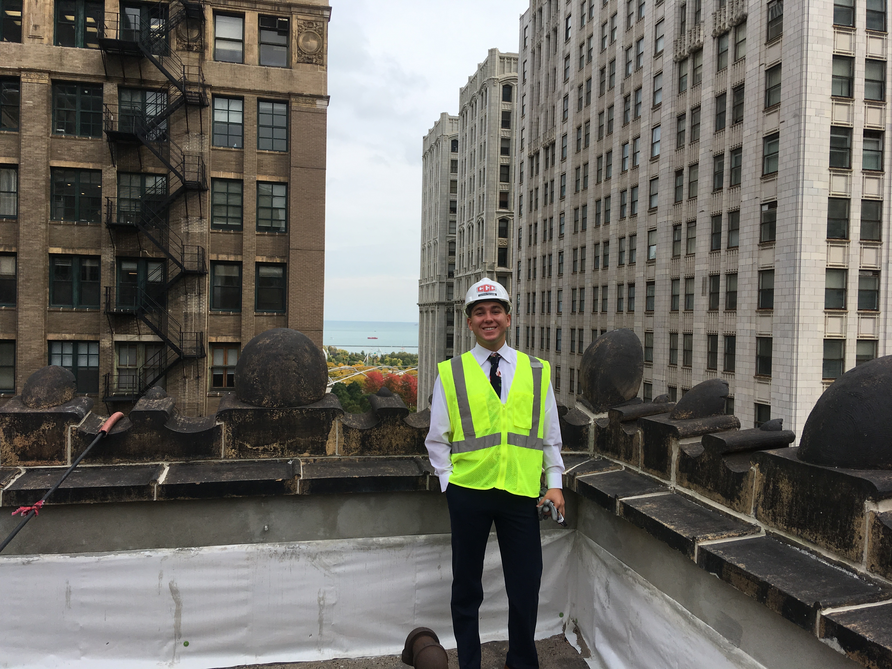
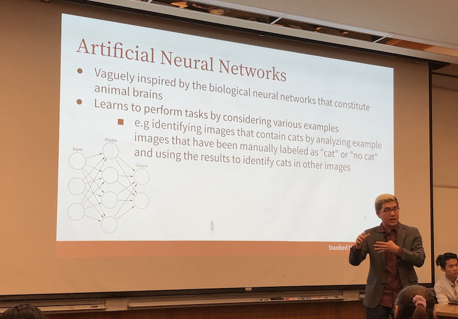
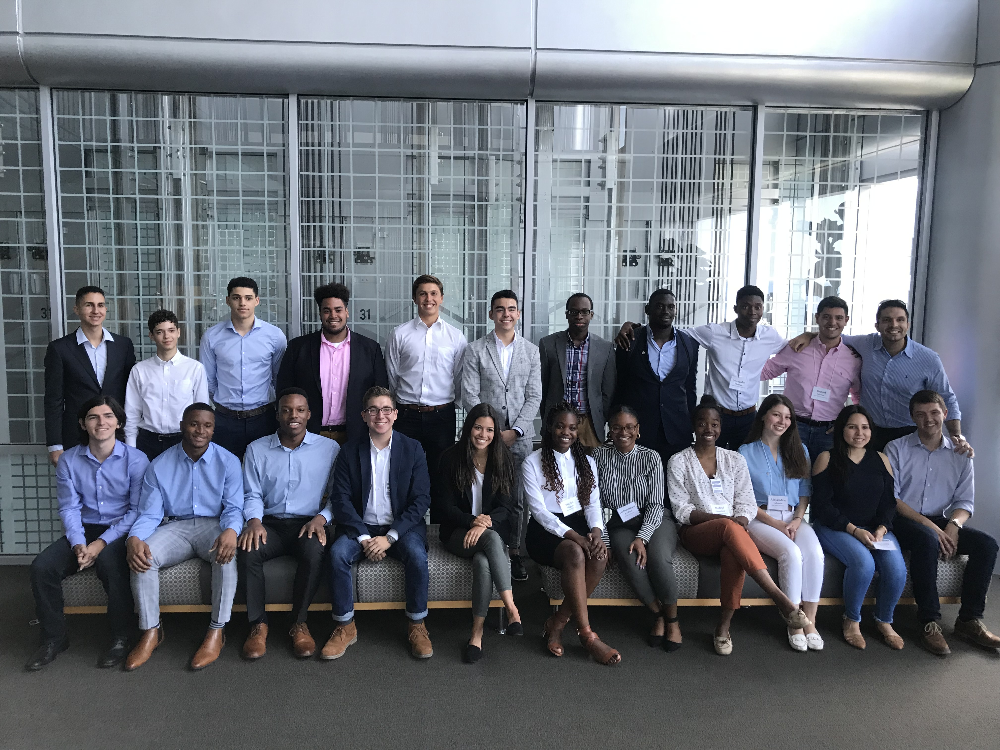
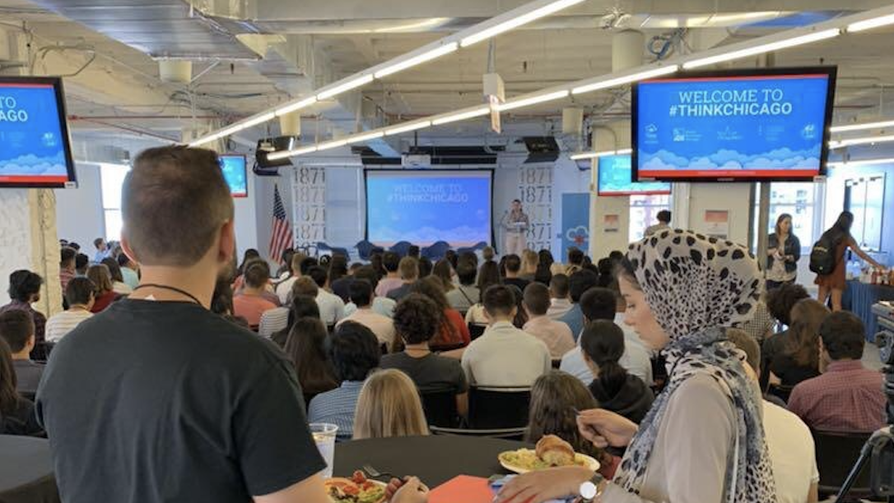

Morgan Stanley Early Insights Program
I was accepted to a selective program in Morgan Stanley's New York office for a weekend of problem solving, network building, and financial services exploration. With an acceptance rate below 10%, this program allowed me to connect with some of my brightest peers in finance. However, occuring near the start of the COVID-19 crisis, the program transitioned into an online format, emphasizing mentorship and building pragmatic experience.
CCC Holdings Inc.
{kind=link}
During my internship as a Project Management Intern, I reported directly to the COO on high-profile projects with the General Services Administration, Chicago Park District, and Chicago Public Schools. I established myself within the construction industry while managing and dealing with more experienced contractors. I ensured and maintained new construction timeline with delegation and planning between construction companies and clients. Over the course of my internship, I worked on 17 projects totalling over $1M in revenue. I proudly accomplished new construction in hurting and impoverished neighborhoods in South Chicago as well as the Downtown Loop area. In this photo I am standing atop the Marshall Field and Company Building, as part of a project I was on.
Stanford Splash
{kind=link}
Stanford Splash is a student run education program aimed at area high schoolers and middle schoolers. Classes are taught by Stanford students in areas of their choosing. This year, I cotaught a class called "AI and Machine Learning 101" giving an introductory look at current machine learning models and theories at a high level of abstraction.
McKinsey Midwest Diversity Summit
{kind=link}
Collaborated on case-studies and understandings of workplace diversity & inclusion with 21 students from 15 institutions nation-wide. Gained a community of fellow undergraduates interested in consulting, hailing from other underrepresented and blue-collar communities. Supported by mentoring McKinsey Analysts, recruiters, and interns. Accepted out of competitive and dense applicant pool.
THINKChicago
{kind=link}
THINKChicago is a program presented by Lori Lightfoot, the University of Illinois System, World Business Chicago, and Lollapalooza, inviting 200 of the nation's top tech talent to Chicago. Here, I cultivated synergy and creativity towards high-profile problems pressing Chicago’s Mayor’s Office within a 6-person team comprising of different teams. While assigned a “difficult” and “unattractive” issue of Last Mile Transportation, we succeeded in becoming pitch finalist to advise Mayor Lightfoot while acting as Team Co-Presenter. Accepted out of competitive and dense application pool.